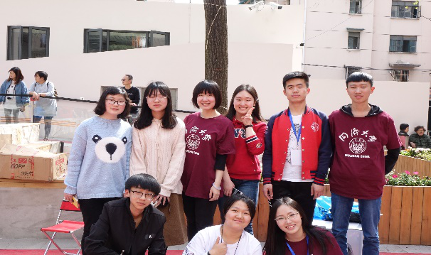
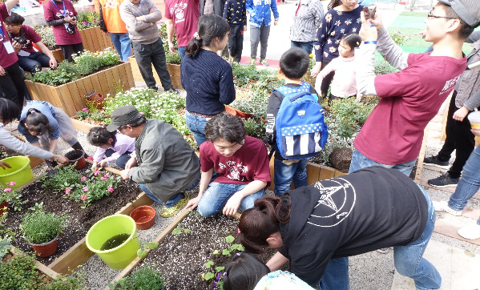

南丹小区位于上海市徐家汇街道的中西部，始建于1951年，目前常住人口超过6000人，现有设施面积约1800平方米。“南丹·邻里汇”毗邻南丹小区，是以老年服务项目为主，兼顾生活服务、医疗服务等多功能、多属性设置的社区服务集合体。
“南丹·邻里汇”于2017年底改造完成，2018年1月2日起开始试运营，2月14日正式运营。其中，一块夹在矮墙与玻璃房之间的畸零空间，正是由“城市360”平台对接姚栋工作室进行规划设计，改造成为一方小型植物培育园。这块被改造利用的畸零空间虽然面积不大，但是却是整个“南丹·邻里汇”活动中心的一个亮点：在柔化周围钢筋水泥世界的同时，也提供了一个连接大学生与社区的学生实践平台——在“南丹·邻里汇节”上，同济大学建筑系的同学们以这块被改造的畸零空间为例，向南丹小区的居民们介绍科普了“城市畸零空间”的概念和上海市正在面临的大量畸零空间急待改造等问题；另有一些我校非建筑系的同学参与到了社区服务的活动之中。
“南丹·邻里汇”的畸零空间改造是一个十分突出的案例，通过“城市360”平台媒介作用，大学生们能够服务社区群众、将学习的理论知识运用在更加实际的场景之中、把最新的理念传达给更大的群体；居民们能够更充分地享受社区空间，得以通过多样的形式建立对温馨社区空间的归属感。
以“南丹·邻里汇”为活动场地依托，徐家汇街道办通过举行“南丹·邻里汇节”，引导居民使用社区广场、加强对社区空间的充分利用，并吸引各年龄段居民参与到社区活动中。据了解，“南丹·邻里汇节”将“南丹·邻里汇”划分为不同空间区域，不同的空间区域中举办各类交互性极强的有趣项目——涵盖舞台活动、青团制作教学、百家饭、电影放映、二手市场、互动游戏、自然教育和闭幕式演出等内容。
场地由不同的主题颜色分为不同的区域。 红色：二手市场；绿色：舞台活动；黄色：互动游戏
“南丹·邻里汇节”从艺术、饮食、习俗和知识等角度，充分唤起居民对活动的参与度——无论退休老人、待产妈妈还是青少年儿童，都能在“南丹·邻里汇”找到满足自我需要的活动内容。在诸如此类的社区活动中，被改造后的社区空间利用度大大提升，社区居民的精神物质需求也得到了很大程度的满足。